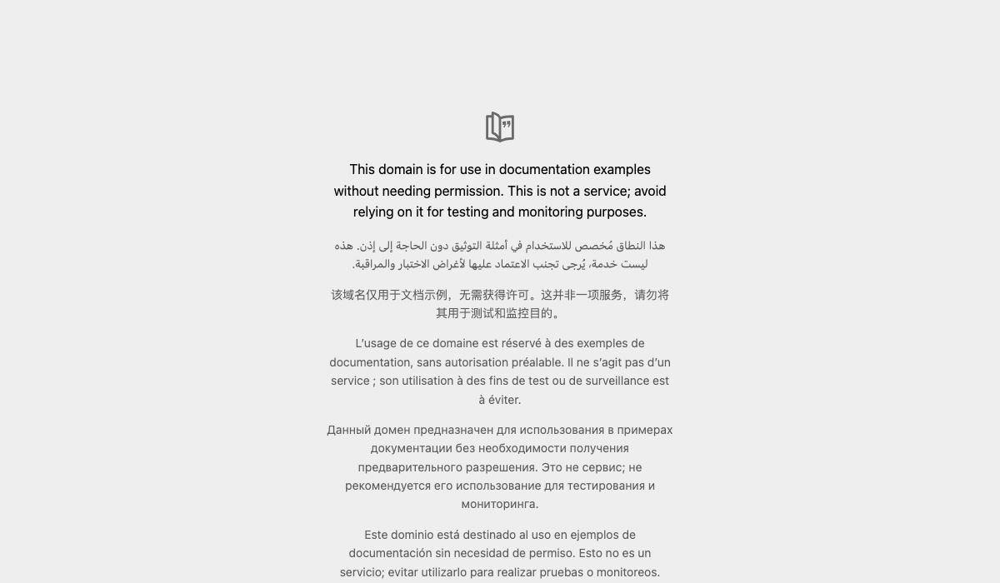

发布推迟一周吗？背景：测试还有 3 个问题。要的结果：定日期。拍板：产品负责人。8 分钟。
## 议程（周三 10:00，30 分钟） 1. [8 分钟] 发布推迟一周吗？ —— 拍板：产品负责人 2. [10 分钟] 新人入职安排 —— 要的结果：定导师 3. [5 分钟] 本周变化（只说变化） ## 会后 - 纪要当场发；截止前一天负责人同步
| 会 | 目的 | 时长 | 产出 |
|---|---|---|---|
| 周会 | 同步变化、定小事 | 30 分钟 | 纪要 |
| 评审会 | 对一份方案做决定 | 45 分钟 | 通过 / 不通过和修改点 |
| 头脑风暴 | 出尽可能多的点子 | 60 分钟 | 点子清单，会后再筛 |
